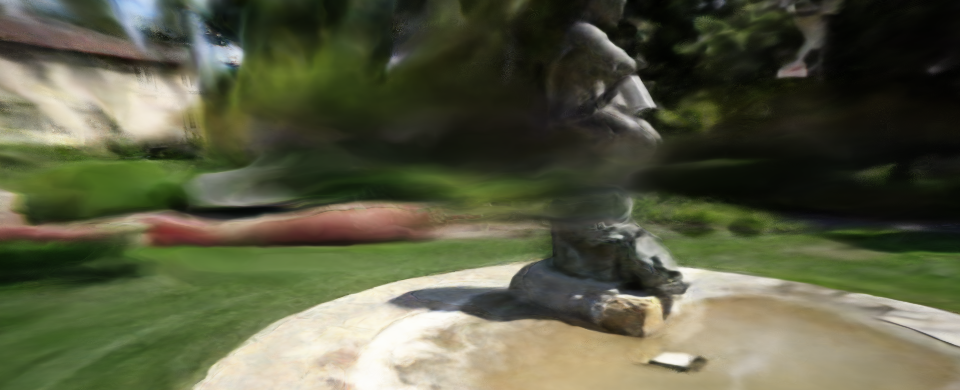

NoPe-NeRF: Optimising Neural Radiance Field with No Pose Prior
SC-NeRF
NeRFmm

BARF
Ours


Abstract
Training a Neural Radiance Field (NeRF) without pre-computed camera poses is challenging. Recent advances in this direction demonstrate the possibility of jointly optimising a NeRF and camera poses in forward-facing scenes. However, these methods still face difficulties during dramatic camera movement. We tackle this challenging problem by incorporating undistorted monocular depth priors. These priors are generated by correcting scale and shift parameters during training, with which we are then able to constrain the relative poses between consecutive frames. This constraint is achieved using our proposed novel loss functions. Experiments on real-world indoor and outdoor scenes show that our method can handle challenging camera trajectories and outperforms existing methods in terms of novel view rendering quality and pose estimation accuracy.
Method Overview
Pose Estimation
We visualise the estimated pose trajectories of each method against ground truth trajectories. We also visualised the relative rotation errors (RPEr) for each frame in the image sequence as colour bars at the bottom, where the relative scaling of colour is shown on the right (in degrees).


Novel View Rendering
We show novel views from a Bezier curve which is fitted to estimated camera poses.
We show novel views from a spiral curve which is fitted to estimated camera poses.
Full Video
BibTeX
@inproceedings{bian2022nopenerf,
author = {Wenjing Bian and Zirui Wang and Kejie Li and Jiawang Bian and Victor Adrian Prisacariu},
title = {NoPe-NeRF: Optimising Neural Radiance Field with No Pose Prior},
journal = {CVPR},
year = {2023}
}